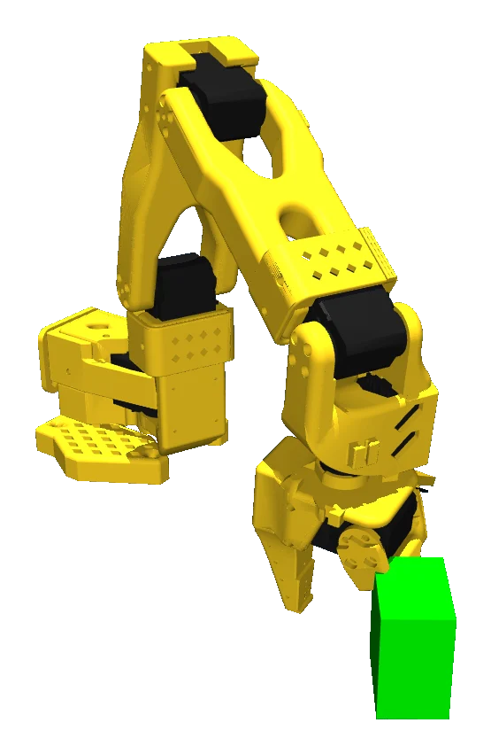
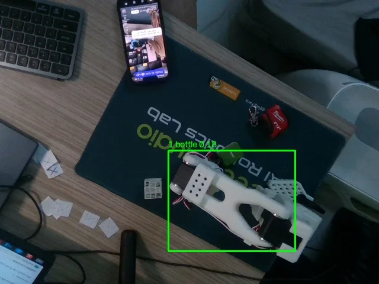
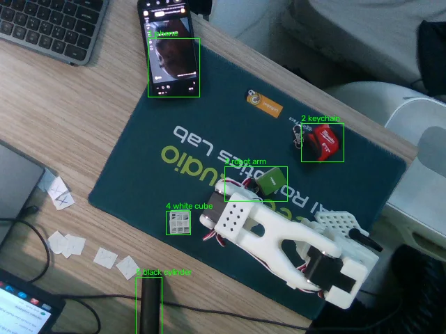
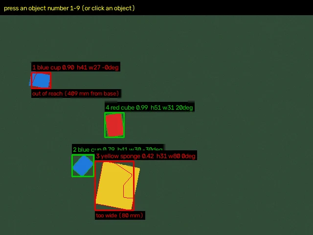
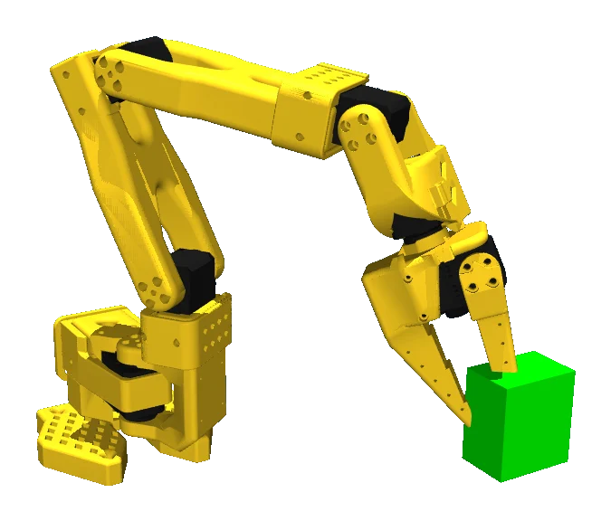

<meta charset="utf-8">
<title>SO101 camera_pick</title>
<meta name="claude:viewport-fit-sides" content="cover">
<meta name="description" content="Nhật ký làm việc 21/11/2026: gắp vật bằng camera với tay robot SO101.">
<link rel="preconnect" href="https://fonts.googleapis.com">
<link rel="preconnect" href="https://fonts.gstatic.com" crossorigin>
<link rel="stylesheet" href="https://fonts.googleapis.com/css2?family=Inter+Tight:wght@400;500;600;700&family=JetBrains+Mono:wght@400;500&display=swap">
<style>
/* Layout: one long dark scroll story; each section = one chapter of the work log, two light "paper" chapters mark hardware and measuring. */
:root{
  color-scheme:dark;
  --bg:#0a0a0b; --bg-2:#131315; --bg-3:#1c1c1f;
  --paper:#f5f5f7; --paper-2:#fff;
  --fg:#f5f5f7; --fg-2:rgba(245,245,247,.72); --fg-3:rgba(245,245,247,.48); --fg-4:rgba(245,245,247,.22);
  --ink:#1d1d1f; --ink-2:#424245; --ink-3:#6e6e73;
  --line:rgba(255,255,255,.10); --line-2:rgba(255,255,255,.22);
  --accent:#ffd60a; --accent-ink:#8a6d00; --accent-soft:rgba(255,214,10,.14);
  --human:#2997ff; --robot:#4fd1c5; --ok:#30d158; --bad:#ff453a;
  --font:-apple-system,BlinkMacSystemFont,"SF Pro Display","Inter Tight","Segoe UI",Helvetica,Arial,sans-serif;
  --mono:ui-monospace,"SF Mono","JetBrains Mono",Menlo,Consolas,monospace;
  --ease-out:cubic-bezier(.16,1,.3,1);
  --maxw:1180px; --gutter:clamp(20px,4.2vw,48px); --r:20px; --r-l:28px;
  --t-hero:clamp(40px,6.4vw,88px); --t-h2:clamp(30px,4.8vw,62px); --t-lead:clamp(17px,1.6vw,22px);
  --sec-pad:clamp(88px,10vw,140px); --nav-h:52px;
}
*{box-sizing:border-box}
html{scroll-behavior:smooth;scroll-padding-top:calc(var(--nav-h) + 12px)}
body{margin:0;background:var(--bg);color:var(--fg);font-family:var(--font);font-size:17px;line-height:1.5;-webkit-font-smoothing:antialiased;overflow-x:hidden}
body::before{content:"";position:fixed;inset:0 0 auto;height:env(safe-area-inset-top,0px);z-index:60;background:rgba(10,10,11,.92)}
img{max-width:100%;display:block}
a{color:inherit}
:focus-visible{outline:2px solid var(--accent);outline-offset:3px;border-radius:6px}
.wrap{max-width:var(--maxw);margin:0 auto;padding-left:max(var(--gutter),env(safe-area-inset-left,0px));padding-right:max(var(--gutter),env(safe-area-inset-right,0px))}
code,.mono{font-family:var(--mono);font-size:.88em}
code{background:rgba(255,255,255,.07);padding:.1em .38em;border-radius:6px}
.sec--light code{background:rgba(0,0,0,.06)}

/* ---------- nav ---------- */
.nav{position:sticky;top:env(safe-area-inset-top,0px);z-index:50;height:var(--nav-h);background:rgba(10,10,11,.72);backdrop-filter:saturate(180%) blur(20px);-webkit-backdrop-filter:saturate(180%) blur(20px);border-bottom:1px solid var(--line)}
.nav .wrap{height:100%;display:flex;align-items:center;gap:28px}
.brand{display:flex;align-items:center;gap:10px;font-weight:600;font-size:15px;letter-spacing:-.01em;text-decoration:none;white-space:nowrap}
.brand i{width:22px;height:22px;border-radius:7px;background:var(--accent);display:grid;place-items:center;color:#111;font-style:normal;font-size:11px;font-weight:700;font-family:var(--mono)}
.brand span{color:var(--fg-3);font-weight:500}
.nav ul{list-style:none;margin:0 0 0 auto;padding:0;display:flex;gap:22px;overflow-x:auto;scrollbar-width:none}
.nav ul::-webkit-scrollbar{display:none}
.nav a.lnk{font-size:13px;color:var(--fg-2);text-decoration:none;white-space:nowrap;padding:16px 0;position:relative;transition:color .2s}
.nav a.lnk:hover{color:var(--fg)}
.nav a.lnk.on{color:var(--fg)}
.nav a.lnk.on::after{content:"";position:absolute;left:0;right:0;bottom:8px;height:2px;border-radius:2px;background:var(--accent)}
@media (max-width:820px){.nav ul{display:none}}

/* ---------- section scaffolding ---------- */
.sec{padding-block:var(--sec-pad);position:relative}
.sec--alt{background:var(--bg-2)}
.sec--light{background:var(--paper);color:var(--ink);--fg:var(--ink);--fg-2:var(--ink-2);--fg-3:var(--ink-3);--fg-4:rgba(0,0,0,.18);--line:rgba(0,0,0,.10);--line-2:rgba(0,0,0,.2);--accent:var(--accent-ink);--accent-soft:rgba(138,109,0,.1)}
.eyebrow{display:flex;gap:10px;align-items:baseline;font-size:13px;font-weight:600;letter-spacing:.08em;text-transform:uppercase;color:var(--accent);margin:0 0 18px}
.eyebrow .n{font-family:var(--mono);font-weight:500;letter-spacing:0}
h1,h2,h3{margin:0;font-weight:700;letter-spacing:-.03em;text-wrap:balance}
h2{font-size:var(--t-h2);line-height:1.04;max-width:16ch}
h3{font-size:clamp(20px,2vw,26px);line-height:1.15;letter-spacing:-.02em}
.lead{font-size:var(--t-lead);color:var(--fg-2);max-width:62ch;margin:22px 0 0;line-height:1.5}
.head{margin-bottom:clamp(40px,6vw,72px)}
.muted{color:var(--fg-3)}
.grid{display:grid;gap:20px}
.g2{grid-template-columns:repeat(2,minmax(0,1fr))}
.g3{grid-template-columns:repeat(3,minmax(0,1fr))}
.g4{grid-template-columns:repeat(4,minmax(0,1fr))}
@media (max-width:900px){.g3,.g4{grid-template-columns:repeat(2,minmax(0,1fr))}}
@media (max-width:620px){.g2,.g3,.g4{grid-template-columns:minmax(0,1fr)}}
.card{background:var(--bg-3);border:1px solid var(--line);border-radius:var(--r);padding:26px;min-width:0}
.sec--alt .card{background:#19191c}
.sec--light .card{background:var(--paper-2);border-color:rgba(0,0,0,.08)}
.card h3{margin-bottom:10px}
.card p{margin:0;color:var(--fg-2);font-size:15.5px}
.card .tag{display:inline-block;font-family:var(--mono);font-size:12px;color:var(--fg-3);margin-bottom:14px}
.pill{display:inline-flex;align-items:center;gap:8px;height:44px;padding:0 22px;border-radius:999px;font-size:15px;font-weight:600;text-decoration:none;border:1px solid var(--line-2);transition:transform .25s var(--ease-out),background .2s}
.pill:hover{transform:translateY(-1px)}
.pill--solid{background:var(--fg);color:var(--bg);border-color:transparent}
.pill--ghost{color:var(--fg)}
.pill--ghost:hover{background:rgba(255,255,255,.06)}

/* ---------- reveal ---------- */
[data-reveal]{transition:opacity 1s var(--ease-out),transform 1s var(--ease-out)}
[data-reveal].pre{opacity:0;transform:translateY(26px)}
.sec.is-off,.sec.is-off *{animation-play-state:paused!important}

/* ---------- hero ---------- */
.hero{padding-block:clamp(56px,8vw,110px) clamp(40px,6vw,80px);overflow:hidden}
.hero-grid{display:grid;grid-template-columns:minmax(0,1.15fr) minmax(0,.85fr);gap:clamp(24px,4vw,56px);align-items:center}
@media (max-width:900px){.hero-grid{grid-template-columns:minmax(0,1fr)}}
.hero h1{font-size:var(--t-hero);line-height:1.0;max-width:13ch}
.hero h1 em{font-style:normal;color:var(--accent)}
.hero .line{opacity:0;transform:translateY(22px);animation:heroIn 1.1s var(--ease-out) forwards}
@keyframes heroIn{to{opacity:1;transform:none}}
.hero.shown .line{opacity:1;transform:none;animation:none}
.hero .cta{display:flex;flex-wrap:wrap;gap:12px;margin-top:34px}
.chips{display:flex;flex-wrap:wrap;gap:8px;margin-top:40px}
.chip{display:inline-flex;gap:8px;align-items:center;padding:8px 14px;border-radius:999px;border:1px solid var(--line);font-size:13px;color:var(--fg-2);text-decoration:none;transition:border-color .2s,color .2s,background .2s}
.chip b{font-family:var(--mono);font-weight:500;color:var(--fg-3)}
.chip:hover{border-color:var(--accent);color:var(--fg);background:var(--accent-soft)}

.stage{position:relative;aspect-ratio:555/851;max-height:640px;margin-inline:auto;width:min(100%,430px)}
.stage::before{content:"";position:absolute;inset:6% -18% 0;background:radial-gradient(closest-side,rgba(255,214,10,.22),transparent 70%);filter:blur(8px)}
.stage .drift{position:absolute;inset:0;animation:drift 22s ease-in-out infinite alternate}
@keyframes drift{from{transform:scale(1.0) translate(-1%,0)}to{transform:scale(1.04) translate(1%,-1.2%)}}
.stage img{width:100%;height:100%;object-fit:contain;position:relative}
.scan{position:absolute;left:0;right:0;height:22%;top:-22%;background:linear-gradient(180deg,transparent,rgba(79,209,197,.16) 70%,rgba(79,209,197,.45));mix-blend-mode:screen;animation:scan 5.5s cubic-bezier(.45,0,.55,1) infinite;pointer-events:none}
@keyframes scan{0%{top:-22%}70%,100%{top:100%}}
.dot{position:absolute;transform:translate(-50%,-50%);display:flex;align-items:center;gap:8px;pointer-events:none}
.dot i{width:12px;height:12px;border-radius:50%;background:var(--robot);box-shadow:0 0 0 0 rgba(79,209,197,.6);animation:pulse 2.4s infinite;flex:none}
.dot.tcp i{background:var(--accent);box-shadow:0 0 0 0 rgba(255,214,10,.6)}
.dot span{font-family:var(--mono);font-size:11px;color:#fff;background:rgba(10,10,11,.72);border:1px solid var(--line-2);padding:3px 7px;border-radius:7px;white-space:nowrap;backdrop-filter:blur(8px)}
.dot.l{flex-direction:row-reverse}
@keyframes pulse{0%{box-shadow:0 0 0 0 rgba(79,209,197,.55)}70%{box-shadow:0 0 0 12px rgba(79,209,197,0)}100%{box-shadow:0 0 0 0 rgba(79,209,197,0)}}
.badge{position:absolute;left:6%;bottom:4%;display:flex;align-items:center;gap:10px;padding:10px 14px;border-radius:14px;background:rgba(28,28,31,.6);border:1px solid var(--line-2);backdrop-filter:blur(14px);font-size:13px;color:var(--fg-2)}
.badge b{color:var(--fg)}
.live{width:8px;height:8px;border-radius:50%;background:var(--ok);animation:pulseG 1.8s infinite}
@keyframes pulseG{0%{box-shadow:0 0 0 0 rgba(48,209,88,.6)}70%{box-shadow:0 0 0 9px rgba(48,209,88,0)}100%{box-shadow:0 0 0 0 rgba(48,209,88,0)}}

/* ---------- stats ---------- */
.stat{padding:28px 26px}
.stat .big{font-size:clamp(44px,5.2vw,72px);font-weight:700;letter-spacing:-.04em;line-height:1;font-variant-numeric:tabular-nums}
.stat .big small{font-size:.42em;font-weight:600;color:var(--fg-3);margin-left:4px;letter-spacing:-.01em}
.stat p{margin:12px 0 0;font-size:15px}
.what{margin-top:20px}
.what .card h3{display:flex;gap:10px;align-items:center}
.k{font-family:var(--mono);font-size:12px;padding:2px 8px;border-radius:6px;border:1px solid var(--line-2);color:var(--fg-2)}

/* ---------- hardware (light) ---------- */
.hw .card{display:flex;flex-direction:column;gap:12px}
.spec{list-style:none;padding:0;margin:8px 0 0;display:grid;gap:8px;font-size:14.5px;color:var(--ink-2)}
.spec li{display:flex;justify-content:space-between;gap:14px;border-top:1px solid rgba(0,0,0,.07);padding-top:8px}
.spec li span:last-child{text-align:right;color:var(--ink);font-weight:500}
.note{margin-top:20px;padding:16px 20px;border-radius:16px;background:var(--accent-soft);color:var(--ink-2);font-size:15px}

/* ---------- stack ---------- */
.stack{display:grid;gap:10px}
.layer{display:grid;grid-template-columns:150px minmax(0,1fr) minmax(0,1.2fr);gap:20px;align-items:center;padding:18px 22px;border-radius:16px;border:1px solid var(--line);background:var(--bg-3)}
.layer .lv{font-family:var(--mono);font-size:12px;color:var(--fg-3);text-transform:uppercase;letter-spacing:.06em}
.layer .tech{font-weight:600;font-size:17px}
.layer .use{color:var(--fg-2);font-size:15px}
.layer.ai{border-color:rgba(255,214,10,.4);background:linear-gradient(90deg,rgba(255,214,10,.08),var(--bg-3) 60%)}
@media (max-width:760px){.layer{grid-template-columns:minmax(0,1fr);gap:4px}}

/* ---------- coordinates ---------- */
.formula{font-family:var(--mono);font-size:clamp(13px,1.4vw,16px);line-height:1.9;background:#0f0f11;border:1px solid var(--line);border-radius:var(--r);padding:22px 26px;overflow-x:auto;white-space:pre;color:var(--fg-2)}
.formula b{color:var(--accent);font-weight:500}
.axes{display:flex;gap:10px;flex-wrap:wrap;margin-top:16px}
.ax{font-family:var(--mono);font-size:13px;padding:6px 12px;border-radius:999px;border:1px solid var(--line-2);color:var(--fg-2)}
.ax b{color:var(--fg)}

/* ---------- pipeline ---------- */
.legend{display:flex;gap:18px;flex-wrap:wrap;margin-bottom:26px;font-size:14px;color:var(--fg-2)}
.legend span{display:inline-flex;gap:8px;align-items:center}
.legend i{width:10px;height:10px;border-radius:3px}
.pipe{display:grid;grid-template-columns:repeat(4,minmax(0,1fr));gap:0;position:relative}
.node{position:relative;padding:22px 20px 22px;border:1px solid var(--line);border-radius:18px;background:var(--bg-3);margin:0 14px 28px 0;transition:border-color .4s,box-shadow .4s,transform .4s var(--ease-out)}
.node .st{font-family:var(--mono);font-size:12px;color:var(--fg-3)}
.node h4{margin:8px 0 6px;font-size:17px;letter-spacing:-.01em}
.node p{margin:0;font-size:14px;color:var(--fg-2)}
.node.h{--c:var(--human)} .node.r{--c:var(--robot)} .node.a{--c:var(--accent)}
.node::before{content:"";position:absolute;left:20px;top:0;width:28px;height:3px;border-radius:0 0 3px 3px;background:var(--c)}
.node.lit{border-color:var(--c);box-shadow:0 0 0 1px var(--c),0 10px 40px -12px var(--c);transform:translateY(-3px)}
.node::after{content:"";position:absolute;right:-15px;top:50%;width:16px;height:2px;background:repeating-linear-gradient(90deg,var(--fg-4) 0 4px,transparent 4px 8px);background-size:8px 2px;animation:flow 0.8s linear infinite}
.pipe .node:nth-child(4n)::after,.pipe .node:last-child::after{display:none}
@keyframes flow{to{background-position:8px 0}}
@media (max-width:900px){.pipe{grid-template-columns:repeat(2,minmax(0,1fr))}.pipe .node:nth-child(2n)::after{display:none}}
@media (max-width:560px){.pipe{grid-template-columns:minmax(0,1fr)}.node{margin-right:0}.node::after{display:none}}
.loopnote{display:flex;gap:12px;align-items:center;color:var(--fg-3);font-size:14px;margin-top:6px}
.spin{width:22px;height:22px;border:2px solid var(--fg-4);border-top-color:var(--accent);border-radius:50%;animation:rot 1.6s linear infinite}
@keyframes rot{to{transform:rotate(360deg)}}

/* ---------- before / now ---------- */
.bn{display:grid;grid-template-columns:minmax(0,1fr) 56px minmax(0,1fr);align-items:stretch;gap:0}
.bn .arrow{display:grid;place-items:center;color:var(--accent);font-size:28px;animation:nudge 1.6s var(--ease-out) infinite}
@keyframes nudge{0%,100%{transform:translateX(-3px)}50%{transform:translateX(5px)}}
.shot{border-radius:var(--r-l);overflow:hidden;border:1px solid var(--line);background:var(--bg-3);display:flex;flex-direction:column}
.shot img{width:100%;aspect-ratio:4/3;object-fit:cover}
.shot .cap{padding:18px 22px 22px}
.shot .cap h3{font-size:19px;margin-bottom:6px}
.shot .cap p{margin:0;font-size:14.5px;color:var(--fg-2)}
.shot.now{border:1px solid transparent;background:linear-gradient(var(--bg-3),var(--bg-3)) padding-box,linear-gradient(135deg,var(--accent),var(--robot)) border-box}
.verdict{display:inline-block;font-family:var(--mono);font-size:11px;padding:3px 8px;border-radius:6px;margin-bottom:10px}
.verdict.bad{background:rgba(255,69,58,.14);color:#ff8a82}
.verdict.good{background:rgba(48,209,88,.14);color:#6fe08f}
@media (max-width:760px){.bn{grid-template-columns:minmax(0,1fr)}.bn .arrow{transform:rotate(90deg);height:48px;animation:none}}

.two{display:grid;grid-template-columns:minmax(0,1fr) minmax(0,1fr);gap:20px;margin-top:20px}
@media (max-width:760px){.two{grid-template-columns:minmax(0,1fr)}}
.steps{counter-reset:s;list-style:none;padding:0;margin:14px 0 0;display:grid;gap:12px}
.steps li{counter-increment:s;display:grid;grid-template-columns:28px minmax(0,1fr);gap:12px;font-size:15px;color:var(--fg-2)}
.steps li::before{content:counter(s);font-family:var(--mono);font-size:12px;width:26px;height:26px;border-radius:8px;display:grid;place-items:center;background:var(--accent-soft);color:var(--accent)}
.steps b{color:var(--fg)}
.bars{display:grid;gap:12px;margin-top:16px}
.bar{display:grid;grid-template-columns:120px minmax(0,1fr) 44px;gap:12px;align-items:center;font-size:14px}
.bar .t{height:10px;border-radius:6px;background:rgba(255,255,255,.07);overflow:hidden}
.bar .t i{display:block;height:100%;width:0;border-radius:6px;background:linear-gradient(90deg,var(--robot),var(--accent));transition:width 1.4s var(--ease-out)}
.bar.go .t i{width:var(--w)}
.bar .v{font-family:var(--mono);font-size:13px;color:var(--fg-2);text-align:right;font-variant-numeric:tabular-nums}
.bar .lab{color:var(--fg-2);white-space:nowrap;overflow:hidden;text-overflow:ellipsis}

/* ---------- stepper (focus frame) ---------- */
.stepper{display:grid;grid-template-columns:minmax(0,1.3fr) minmax(0,1fr);gap:28px;align-items:start;margin-top:56px}
@media (max-width:860px){.stepper{grid-template-columns:minmax(0,1fr)}}
.frame{position:relative;border-radius:var(--r-l);overflow:hidden;border:1px solid var(--line)}
.frame img{width:100%;aspect-ratio:4/3;object-fit:cover}
.focus{position:absolute;border:2px solid var(--accent);border-radius:10px;box-shadow:0 0 0 4px rgba(255,214,10,.18),0 0 30px rgba(255,214,10,.35);transition:left .7s var(--ease-out),top .7s var(--ease-out),width .7s var(--ease-out),height .7s var(--ease-out)}
.sbtns{display:grid;gap:10px}
.sbtn{all:unset;cursor:pointer;display:grid;gap:4px;padding:16px 18px;border-radius:16px;border:1px solid var(--line);background:var(--bg-3);position:relative;overflow:hidden;transition:border-color .3s,background .3s}
.sbtn:focus-visible{outline:2px solid var(--accent);outline-offset:2px}
.sbtn b{font-size:16px;color:var(--fg)}
.sbtn span{font-size:14px;color:var(--fg-2)}
.sbtn .ok{color:#6fe08f}.sbtn .no{color:#ff8a82}
.sbtn.on{border-color:var(--accent);background:#1f1d14}
.sbtn .prog{position:absolute;left:0;bottom:0;height:2px;width:0;background:var(--accent)}
.sbtn.on .prog{animation:prog 4s linear forwards}
@keyframes prog{to{width:100%}}

/* ---------- measure (light) ---------- */
.meas{display:grid;gap:14px}
.mrow{display:grid;grid-template-columns:200px minmax(0,1fr);gap:24px;padding:22px 24px;border-radius:18px;background:var(--paper-2);border:1px solid rgba(0,0,0,.07)}
.mrow h4{margin:0;font-size:17px;letter-spacing:-.01em}
.mrow h4 small{display:block;font-family:var(--mono);font-size:12px;color:var(--ink-3);font-weight:400;margin-top:4px}
.mrow p{margin:0;color:var(--ink-2);font-size:15.5px}
@media (max-width:680px){.mrow{grid-template-columns:minmax(0,1fr);gap:6px}}

/* ---------- motion loop ---------- */
.motion{display:grid;grid-template-columns:minmax(0,1fr) minmax(0,1fr);gap:clamp(24px,4vw,56px);align-items:center}
@media (max-width:900px){.motion{grid-template-columns:minmax(0,1fr)}}
.loop{list-style:none;margin:0;padding:0 0 0 26px;position:relative;display:grid;gap:6px}
.loop::before{content:"";position:absolute;left:8px;top:8px;bottom:8px;width:2px;background:repeating-linear-gradient(180deg,var(--fg-4) 0 6px,transparent 6px 12px);background-size:2px 12px;animation:flowv 1s linear infinite}
@keyframes flowv{to{background-position:0 12px}}
.loop li{position:relative;padding:9px 14px;border-radius:12px;font-size:15px;color:var(--fg-3);transition:color .35s,background .35s}
.loop li::before{content:"";position:absolute;left:-23px;top:50%;width:10px;height:10px;margin-top:-5px;border-radius:50%;background:var(--bg-2);border:2px solid var(--fg-4);transition:all .35s}
.loop li b{font-family:var(--mono);font-weight:500;font-size:12px;margin-right:10px;color:var(--fg-4)}
.loop li.lit{color:var(--fg);background:rgba(79,209,197,.08)}
.loop li.lit::before{background:var(--robot);border-color:var(--robot);box-shadow:0 0 12px var(--robot)}
.loop li.grip.lit{background:var(--accent-soft)}
.loop li.grip.lit::before{background:var(--accent);border-color:var(--accent);box-shadow:0 0 12px var(--accent)}
.carry{position:relative}
.carry img{width:100%;max-width:560px;margin-inline:auto;filter:drop-shadow(0 30px 40px rgba(0,0,0,.5))}
.ideas{margin-top:clamp(40px,6vw,72px)}
.ideas .card p+p{margin-top:8px}

/* ---------- physics check ---------- */
.checks{display:grid;grid-template-columns:repeat(3,minmax(0,1fr));gap:20px}
@media (max-width:760px){.checks{grid-template-columns:minmax(0,1fr)}}
.chk{padding:28px;border-radius:var(--r);border:1px solid var(--line);background:var(--bg-3)}
.chk .v{font-size:clamp(34px,4vw,52px);font-weight:700;letter-spacing:-.03em}
.chk .v small{font-size:.45em;color:var(--fg-3);font-weight:600}
.chk p{margin:8px 0 0;color:var(--fg-2);font-size:15px}
.tick{display:inline-grid;place-items:center;width:26px;height:26px;border-radius:50%;background:rgba(48,209,88,.16);color:var(--ok);font-size:14px;margin-bottom:14px}
.retry{display:flex;flex-wrap:wrap;align-items:center;gap:10px;margin-top:22px;font-size:15px;color:var(--fg-2)}
.retry .k{font-size:13px}

/* ---------- performance ---------- */
.perf{display:grid;gap:22px}
.prow{display:grid;grid-template-columns:minmax(0,260px) minmax(0,1fr);gap:24px;align-items:center}
@media (max-width:700px){.prow{grid-template-columns:minmax(0,1fr);gap:8px}}
.prow h4{margin:0;font-size:16px;letter-spacing:-.01em}
.prow h4 small{display:block;color:var(--fg-3);font-weight:400;font-size:13.5px;margin-top:4px}
.pb{display:grid;gap:8px}
.pbl{display:grid;grid-template-columns:52px minmax(0,1fr) 92px;gap:10px;align-items:center;font-size:13px}
.pbl .lb{font-family:var(--mono);color:var(--fg-3)}
.pbl .t{height:14px;border-radius:7px;background:rgba(255,255,255,.05);overflow:hidden}
.pbl .t i{display:block;height:100%;width:0;border-radius:7px;transition:width 1.5s var(--ease-out)}
.pbl.old .t i{background:rgba(255,69,58,.7)}
.pbl.new .t i{background:var(--ok)}
.perf.go .pbl .t i{width:var(--w)}
.pbl .v{font-family:var(--mono);color:var(--fg-2);text-align:right;font-variant-numeric:tabular-nums}

/* ---------- timeline ---------- */
.tl{list-style:none;margin:0;padding:0;display:grid;gap:0;position:relative}
.tl::before{content:"";position:absolute;left:19px;top:10px;bottom:10px;width:2px;background:var(--line-2)}
.tl li{display:grid;grid-template-columns:40px minmax(0,1fr) minmax(0,1fr);gap:20px;padding:16px 0;align-items:start;position:relative}
.tl .num{width:40px;height:40px;border-radius:12px;display:grid;place-items:center;font-family:var(--mono);font-size:13px;background:var(--bg-3);border:1px solid var(--line-2);position:relative;z-index:1}
.tl h4{margin:8px 0 0;font-size:17px;letter-spacing:-.01em}
.tl p{margin:8px 0 0;color:var(--fg-2);font-size:15px}
.tl li.fix .num{border-color:rgba(255,69,58,.5);color:#ff8a82}
@media (max-width:720px){.tl li{grid-template-columns:40px minmax(0,1fr);gap:4px 16px}.tl li p{grid-column:2}}

/* ---------- usage ---------- */
.code{position:relative;background:#0f0f11;border:1px solid var(--line);border-radius:var(--r);overflow:hidden}
.code pre{margin:0;padding:22px 24px;overflow-x:auto;font-family:var(--mono);font-size:13.5px;line-height:1.8;color:var(--fg)}
.code pre .c{color:var(--fg-3)}
.code pre .p{color:var(--accent)}
.copy{position:absolute;top:12px;right:12px;font:500 12px var(--font);color:var(--fg-2);background:rgba(255,255,255,.06);border:1px solid var(--line-2);border-radius:999px;padding:6px 12px;cursor:pointer}
.copy:hover{color:var(--fg)}
.keys{display:grid;grid-template-columns:repeat(4,minmax(0,1fr));gap:12px;margin-top:20px}
@media (max-width:760px){.keys{grid-template-columns:repeat(2,minmax(0,1fr))}}
.key{padding:18px;border-radius:16px;border:1px solid var(--line);background:var(--bg-3)}
.key kbd{display:inline-block;min-width:34px;text-align:center;font-family:var(--mono);font-size:13px;padding:5px 10px;border-radius:8px;background:#26262a;border:1px solid var(--line-2);border-bottom-width:3px;color:var(--fg)}
.key p{margin:10px 0 0;font-size:14px;color:var(--fg-2)}

/* ---------- limits + roadmap ---------- */
.lim{list-style:none;padding:0;margin:0;display:grid;grid-template-columns:repeat(2,minmax(0,1fr));gap:12px 28px}
@media (max-width:700px){.lim{grid-template-columns:minmax(0,1fr)}}
.lim li{display:grid;grid-template-columns:22px minmax(0,1fr);gap:10px;font-size:15.5px;color:var(--fg-2);padding:12px 0;border-top:1px solid var(--line)}
.lim li::before{content:"!";font-family:var(--mono);font-size:12px;width:20px;height:20px;border-radius:6px;display:grid;place-items:center;background:rgba(255,159,10,.14);color:#ffb340;margin-top:2px}
.lim b{color:var(--fg)}
.road{margin-top:clamp(56px,8vw,96px)}
.track{position:relative;height:4px;border-radius:4px;background:var(--line);margin:0 0 28px}
.track .fill{position:absolute;left:0;top:0;bottom:0;width:0;border-radius:4px;background:linear-gradient(90deg,var(--ok),var(--accent));transition:width 1.8s var(--ease-out)}
.road.go .track .fill{width:36%}
.here{position:absolute;left:36%;top:50%;transform:translate(-50%,-50%);display:flex;flex-direction:column;align-items:center;gap:8px;opacity:0;transition:opacity .6s 1.4s}
.road.go .here{opacity:1}
.here i{width:14px;height:14px;border-radius:50%;background:var(--accent);animation:pulseY 1.8s infinite}
@keyframes pulseY{0%{box-shadow:0 0 0 0 rgba(255,214,10,.6)}70%{box-shadow:0 0 0 12px rgba(255,214,10,0)}100%{box-shadow:0 0 0 0 rgba(255,214,10,0)}}
.here span{position:absolute;top:18px;font-family:var(--mono);font-size:11px;color:var(--accent);white-space:nowrap}
.rcol h3{font-size:15px;letter-spacing:.06em;text-transform:uppercase;margin-bottom:12px;display:flex;gap:8px;align-items:center}
.rcol h3 i{width:8px;height:8px;border-radius:50%}
.rcol .card{padding:16px 18px;margin-bottom:10px}
.rcol .card p{font-size:14.5px}

/* ---------- closing ---------- */
.end{text-align:center;padding-block:clamp(110px,14vw,190px) clamp(60px,8vw,100px);position:relative;overflow:hidden}
.end::before{content:"";position:absolute;left:50%;top:40%;width:min(900px,120vw);aspect-ratio:1;transform:translate(-50%,-50%);background:radial-gradient(closest-side,rgba(255,214,10,.16),transparent 70%)}
.end h2{font-size:clamp(56px,11vw,150px);max-width:none;position:relative}
.end p{position:relative;color:var(--fg-2);font-size:var(--t-lead);margin:22px auto 0;max-width:46ch}
footer{border-top:1px solid var(--line);padding-block:28px;color:var(--fg-3);font-size:13px}
footer .wrap{display:flex;flex-wrap:wrap;gap:10px 28px;justify-content:space-between}

@media (prefers-reduced-motion:reduce){
  *,*::before,*::after{animation:none!important;transition:none!important}
  .hero .line{opacity:1;transform:none}
  [data-reveal].pre{opacity:1;transform:none}
  .bar .t i,.pbl .t i{width:var(--w)!important}
  .road .track .fill{width:36%}.road .here{opacity:1}
}
</style>

<nav class="nav" aria-label="Mục lục">
  <div class="wrap">
    <a class="brand" href="#top"><i>SO</i>SO101 <span>camera_pick</span></a>
    <ul>
      <li><a class="lnk" href="#tom-tat">Tóm tắt</a></li>
      <li><a class="lnk" href="#phan-cung">Phần cứng</a></li>
      <li><a class="lnk" href="#nhan-dien">AI nhận diện</a></li>
      <li><a class="lnk" href="#do-vat">Đo vật</a></li>
      <li><a class="lnk" href="#chuyen-dong">Chuyển động</a></li>
      <li><a class="lnk" href="#hieu-nang">Hiệu năng</a></li>
      <li><a class="lnk" href="#dien-bien">Nhật ký</a></li>
      <li><a class="lnk" href="#cach-dung">Cách dùng</a></li>
    </ul>
  </div>
</nav>

<!-- HERO -->
<header class="hero" id="top">
  <div class="wrap hero-grid">
    <div>
      <p class="eyebrow line" style="animation-delay:.05s"><span class="n">21.11.2026</span> Nhật ký làm việc · ~/robot/SO101</p>
      <h1 class="line" style="animation-delay:.15s">Click vào một vật. <em>Tay robot</em> gắp nó.</h1>
      <p class="lead line" style="animation-delay:.3s">Một ngày xây <code>camera_pick.py</code> cho tay SO-101: camera RealSense D415 tìm và đo vật trên bàn, AI gọi tên vật, planner tính đường đi, mô phỏng MuJoCo chạy thử, rồi tay thật mới chạy.</p>
      <div class="cta line" style="animation-delay:.45s">
        <a class="pill pill--solid" href="#quy-trinh">Xem quy trình</a>
        <a class="pill pill--ghost" href="#cach-dung">Cách dùng</a>
      </div>
      <nav class="chips line" style="animation-delay:.6s" aria-label="Các phần">
        <a class="chip" href="#tom-tat"><b>01</b>Tóm tắt</a>
        <a class="chip" href="#phan-cung"><b>02</b>Phần cứng</a>
        <a class="chip" href="#cong-nghe"><b>03</b>Công nghệ</a>
        <a class="chip" href="#toa-do"><b>04</b>Hệ toạ độ</a>
        <a class="chip" href="#quy-trinh"><b>05</b>Quy trình</a>
        <a class="chip" href="#nhan-dien"><b>06</b>AI nhận diện</a>
        <a class="chip" href="#do-vat"><b>07</b>Đo vật</a>
        <a class="chip" href="#chuyen-dong"><b>08</b>Chuyển động</a>
        <a class="chip" href="#mo-phong"><b>09</b>Mô phỏng</a>
        <a class="chip" href="#hieu-nang"><b>10</b>Hiệu năng</a>
        <a class="chip" href="#dien-bien"><b>11</b>Diễn biến</a>
        <a class="chip" href="#cach-dung"><b>12</b>Cách dùng</a>
        <a class="chip" href="#gioi-han"><b>13</b>Giới hạn</a>
      </nav>
    </div>
    <div class="stage line" style="animation-delay:.25s" aria-label="Mô hình MuJoCo của tay SO-101 với tên các khớp">
      <div class="drift">
        
        <div class="scan"></div>
        <div class="dot l" style="left:44.2%;top:46.8%"><i></i><span>shoulder_pan</span></div>
        <div class="dot l" style="left:43%;top:36%"><i></i><span>shoulder_lift</span></div>
        <div class="dot" style="left:53.6%;top:15.1%"><i></i><span>elbow_flex</span></div>
        <div class="dot" style="left:82.2%;top:46.5%"><i></i><span>wrist_flex</span></div>
        <div class="dot" style="left:85.8%;top:61.5%"><i></i><span>wrist_roll</span></div>
        <div class="dot tcp l" style="left:85.3%;top:85.2%"><i></i><span>tâm kẹp</span></div>
      </div>
      <div class="badge"><span class="live"></span><span><b>Offline · CPU</b> · 30 lệnh/giây</span></div>
    </div>
  </div>
</header>

<!-- 01 SUMMARY -->
<section class="sec sec--alt" id="tom-tat">
  <div class="wrap">
    <div class="head" data-reveal>
      <p class="eyebrow"><span class="n">01</span> Tóm tắt</p>
      <h2>Chọn vật trên ảnh, chọn chỗ đặt, nhấn SPACE.</h2>
      <p class="lead">Vật được đo tự động từ ảnh độ sâu. Không cần thước. Mỗi lần gắp được chạy thử trong mô phỏng vật lý trước; mô phỏng không đạt thì tay thật không chạy.</p>
    </div>
    <div class="grid g4">
      <div class="card stat" data-reveal><div class="big"><span data-count="0.5" data-dec="1">0,5</span><small>s</small></div><p class="muted">lập kế hoạch + kiểm tra mô phỏng, chạy nền ngay khi click chỗ đặt</p></div>
      <div class="card stat" data-reveal><div class="big"><span data-count="16" data-dec="0">16</span><small>s</small></div><p class="muted">một lần gắp và đặt ở tốc độ 1.0 (tối đa 2.0: khoảng 8 s)</p></div>
      <div class="card stat" data-reveal><div class="big">~<span data-count="5" data-dec="0">5</span><small>mm</small></div><p class="muted">sai số tổng, chủ yếu do hiệu chuẩn camera và USB 2</p></div>
      <div class="card stat" data-reveal><div class="big"><span data-count="0.3" data-dec="1">0,3</span><small>s</small></div><p class="muted">nhận diện cả bàn bằng độ sâu + CLIP trên CPU</p></div>
    </div>
    <div class="grid g3 what">
      <div class="card" data-reveal><span class="tag">camera_pick.py</span><h3>Gắp bằng camera</h3><p>Click vào vật, hoặc <code>--detect "green cube, tape measure"</code> rồi nhấn phím số 1–9.</p></div>
      <div class="card" data-reveal><span class="tag">goto.py</span><h3>Đi tới điểm 3D</h3><p>Đưa tâm kẹp tới x y z bất kỳ, nâng lên trước rồi hạ thẳng xuống để không quét qua vật.</p></div>
      <div class="card" data-reveal><span class="tag">record_home.py</span><h3>Ghi tư thế home</h3><p>Tắt torque, cầm tay đưa tới, nhấn Enter. Mọi script dùng chung tư thế này.</p></div>
    </div>
  </div>
</section>

<!-- 02 HARDWARE (light) -->
<section class="sec sec--light" id="phan-cung">
  <div class="wrap">
    <div class="head" data-reveal>
      <p class="eyebrow"><span class="n">02</span> Phần cứng</p>
      <h2>Một tay robot, một camera độ sâu, một CPU.</h2>
    </div>
    <div class="grid g3 hw">
      <div class="card" data-reveal>
        <span class="tag">Tay robot</span><h3>SO-101 follower</h3>
        <p>TheRobotStudio / Hugging Face LeRobot. Mỗi servo tự giữ vị trí bằng PID bên trong.</p>
        <ul class="spec"><li><span>Servo</span><span>6 × Feetech STS3215</span></li><li><span>Kết nối</span><span>USB serial /dev/ttyACM0</span></li><li><span>Hiệu chuẩn</span><span>my_follower</span></li></ul>
      </div>
      <div class="card" data-reveal>
        <span class="tag">Camera</span><h3>Intel RealSense D415</h3>
        <p>Camera màu RGB và camera độ sâu stereo hồng ngoại có máy chiếu mẫu (active IR).</p>
        <ul class="spec"><li><span>Cổng</span><span>USB 2.1</span></li><li><span>Chế độ</span><span>640×480 @ 30 fps</span></li><li><span>Độ cao</span><span>~66 cm trên mặt bàn</span></li></ul>
      </div>
      <div class="card" data-reveal>
        <span class="tag">Máy tính</span><h3>AMD Ryzen 5 5600H</h3>
        <p>Không có GPU NVIDIA: mọi mô hình AI chạy bằng CPU, không cần mạng.</p>
        <ul class="spec"><li><span>RAM</span><span>16 GB</span></li><li><span>AI</span><span>PyTorch CPU</span></li><li><span>Python</span><span>conda env lerobot, 3.12</span></li></ul>
      </div>
    </div>
    <p class="note" data-reveal>Cắm camera vào cổng <b>USB 3</b> sẽ có độ sâu 1280×720, chi tiết hơn và đo chính xác hơn. Đây là nâng cấp rẻ nhất trong danh sách.</p>
  </div>
</section>

<!-- 03 STACK -->
<section class="sec" id="cong-nghe">
  <div class="wrap">
    <div class="head" data-reveal>
      <p class="eyebrow"><span class="n">03</span> Phần mềm và công nghệ</p>
      <h2>Từng lớp làm một việc.</h2>
    </div>
    <div class="stack">
      <div class="layer" data-reveal><span class="lv">Servo</span><span class="tech">LeRobot <code>SO101Follower</code></span><span class="use">Gửi góc khớp xuống servo, đọc góc hiện tại, bật/tắt torque</span></div>
      <div class="layer" data-reveal><span class="lv">Mô hình robot</span><span class="tech">MuJoCo + Menagerie</span><span class="use">Động học thuận, Jacobian, mô phỏng vật lý, mô hình 3D để che tay robot khỏi ảnh</span></div>
      <div class="layer" data-reveal><span class="lv">Động học ngược</span><span class="tech">Tự viết · Damped Least Squares</span><span class="use">Tính góc khớp để tâm kẹp tới một điểm với góc chúi cho trước</span></div>
      <div class="layer" data-reveal><span class="lv">Camera</span><span class="tech">pyrealsense2</span><span class="use">Ảnh màu + độ sâu, căn độ sâu theo ảnh màu, thông số nội camera</span></div>
      <div class="layer" data-reveal><span class="lv">Xử lý ảnh</span><span class="tech">OpenCV · NumPy · SciPy</span><span class="use">Vùng liên thông, hình chữ nhật bao nhỏ nhất, đám mây điểm 3D, tối ưu hiệu chuẩn</span></div>
      <div class="layer ai" data-reveal><span class="lv">AI</span><span class="tech">OpenAI CLIP ViT-B/32</span><span class="use">Gọi tên vật bằng chữ tự do (zero-shot), chạy offline trên CPU</span></div>
      <div class="layer" data-reveal><span class="lv">AI (tuỳ chọn)</span><span class="tech">Ultralytics YOLO-World</span><span class="use">Phát hiện vật theo tên; giữ lại làm <code>--backend yolo</code></span></div>
    </div>
  </div>
</section>

<!-- 04 COORDINATES -->
<section class="sec sec--alt" id="toa-do">
  <div class="wrap">
    <div class="head" data-reveal>
      <p class="eyebrow"><span class="n">04</span> Hệ toạ độ và hiệu chuẩn</p>
      <h2>Mỗi pixel thành một điểm trong hệ đế robot.</h2>
      <p class="lead">Ảnh độ sâu cho khoảng cách z ở từng pixel. Thông số nội camera đổi pixel thành điểm 3D, và ma trận <code>T_base_cam</code> đưa điểm đó về hệ đế robot. <code>camera_pick</code> làm phép tính này cho cả 640×480 pixel cùng lúc.</p>
    </div>
    <div class="two">
      <div data-reveal>
<div class="formula">X = (u − ppx) / fx · z
Y = (v − ppy) / fy · z
p_cam = (X, Y, z)
<b>p_đế  = R · p_cam + t + hiệu chỉnh XY</b></div>
        <div class="axes"><span class="ax"><b>x</b> ra phía trước</span><span class="ax"><b>y</b> sang trái</span><span class="ax"><b>z</b> lên, từ mặt bàn</span><span class="ax">gốc lùi sau trục đế <b>39 mm</b></span></div>
      </div>
      <div class="card" data-reveal>
        <span class="tag">table_calib.py</span>
        <h3>Hiệu chuẩn bằng điểm chạm</h3>
        <p>Chạm đầu hàm kẹp cố định vào các dấu X trên bàn, rồi click lại đúng dấu đó trên ảnh độ sâu. Bộ giải tìm cùng lúc <code>T_base_cam</code>, độ lệch 3 khớp, độ cao bàn và tỉ lệ độ sâu.</p>
        <ul class="spec" style="color:var(--fg-2)">
          <li style="border-color:var(--line)"><span>Số điểm</span><span style="color:var(--fg)">7</span></li>
          <li style="border-color:var(--line)"><span>Sai số trung bình</span><span style="color:var(--fg)">5,3 mm</span></li>
          <li style="border-color:var(--line)"><span>Tỉ lệ độ sâu</span><span style="color:var(--fg)">1,003</span></li>
          <li style="border-color:var(--line)"><span>Độ lệch khớp</span><span style="color:var(--fg)">lift −0,2° · elbow 6,58° · wrist 4,83°</span></li>
        </ul>
      </div>
    </div>
  </div>
</section>

<!-- 05 PIPELINE -->
<section class="sec" id="quy-trinh">
  <div class="wrap">
    <div class="head" data-reveal>
      <p class="eyebrow"><span class="n">05</span> Quy trình</p>
      <h2>Từ khung hình camera tới tay thật.</h2>
    </div>
    <div class="legend" data-reveal><span><i style="background:var(--human)"></i>Bạn làm</span><span><i style="background:var(--robot)"></i>Máy làm</span><span><i style="background:var(--accent)"></i>AI</span></div>
    <div class="pipe" id="pipe" data-reveal>
      <div class="node r"><span class="st">1 · camera</span><h4>Ảnh màu + độ sâu</h4><p>D415, 30 khung hình mỗi giây</p></div>
      <div class="node r"><span class="st">2 · cloud_base</span><h4>Đám mây điểm 3D</h4><p>Mọi pixel về hệ đế robot</p></div>
      <div class="node r"><span class="st">3 · robot_mask</span><h4>Che tay robot</h4><p>Mô hình 3D theo góc khớp, chiếu lên ảnh</p></div>
      <div class="node a"><span class="st">4 · detect</span><h4>Tìm và gọi tên vật</h4><p>Độ sâu tìm, CLIP gọi tên</p></div>
      <div class="node r"><span class="st">5 · describe</span><h4>Đo vật</h4><p>Tâm, cao, rộng, dài, góc xoay</p></div>
      <div class="node h"><span class="st">6 · bạn</span><h4>Chọn vật, chọn chỗ đặt</h4><p>Click hoặc phím 1–9</p></div>
      <div class="node r"><span class="st">7 · build_plan + physics_check</span><h4>Lập kế hoạch, chạy thử</h4><p>Chạy nền; không đạt thì kẹp cao hơn</p></div>
      <div class="node h"><span class="st">8 · SPACE</span><h4>Tay thật chạy</h4><p>30 lệnh/giây, phím s để dừng, rồi về home</p></div>
    </div>
    <p class="loopnote" data-reveal><span class="spin" aria-hidden="true"></span>Gắp xong thì chọn vật tiếp theo, không phải khởi động lại.</p>
  </div>
</section>

<!-- 06 AI -->
<section class="sec sec--alt" id="nhan-dien">
  <div class="wrap">
    <div class="head" data-reveal>
      <p class="eyebrow"><span class="n">06</span> Nhận diện vật · phần AI</p>
      <h2>Tách "tìm vật" khỏi "gọi tên vật".</h2>
      <p class="lead">YOLO-World vừa tìm vừa gọi tên, nhưng trên camera này nó thất bại. Cách đang dùng giao việc tìm cho ảnh độ sâu, việc gọi tên cho CLIP.</p>
    </div>
    <div class="bn">
      <figure class="shot" data-reveal style="margin:0">
        
        <figcaption class="cap"><span class="verdict bad">Trước · YOLO-World</span><h3>Chỉ thấy "bottle" 0,18, và đó là tay robot</h3><p>Không thấy khối xanh lá, khối trắng; gọi gần như mọi thứ là "marker pen". Mô hình nhỏ, ảnh 640×480, vật nhỏ nhìn thẳng từ trên xuống.</p></figcaption>
      </figure>
      <div class="arrow" aria-hidden="true">→</div>
      <figure class="shot now" data-reveal style="margin:0">
        
        <figcaption class="cap"><span class="verdict good">Bây giờ · độ sâu + CLIP</span><h3>Tìm đủ vật, gọi đúng phần lớn tên</h3><p>Điện thoại 0,98, móc khoá 0,90, ống đen 0,68. Khối xanh lá dính vào đầu kẹp: lý do phải che tay robot.</p></figcaption>
      </figure>
    </div>

    <div class="two">
      <div class="card" data-reveal>
        <span class="tag">Bước 1 · hình học, không cần AI</span>
        <h3>Tìm vật bằng ảnh độ sâu</h3>
        <ol class="steps">
          <li><span><b>Độ cao bàn</b>: trung vị z trong vành 10–42 cm quanh đế.</span></li>
          <li><span><b>Điểm thuộc vật</b>: cao hơn bàn 8 mm tới 15 cm.</span></li>
          <li><span><b>Che tay robot</b>: các khối lưới MuJoCo đặt theo góc khớp đang đọc, chiếu lên ảnh, nới rộng 12 px.</span></li>
          <li><span><b>Vùng liên thông</b> sau phép mở hình thái; mỗi vùng từ 120 pixel là một vật.</span></li>
        </ol>
      </div>
      <div class="card" data-reveal>
        <span class="tag">Bước 2 · AI</span>
        <h3>CLIP gọi tên</h3>
        <p>CLIP đưa ảnh và câu chữ về cùng một không gian vector. Ảnh vật (cắt rộng gấp 1,6 lần để có ngữ cảnh) được so với từng tên, mỗi tên viết theo 3 mẫu câu. Hai lớp nhiễu "robot arm", "empty table" loại bỏ những gì không phải vật.</p>
        <div class="bars" id="clipbars">
          <div class="bar"><span class="lab">phone</span><span class="t"><i style="--w:98%"></i></span><span class="v">0,98</span></div>
          <div class="bar"><span class="lab">keychain</span><span class="t"><i style="--w:90%"></i></span><span class="v">0,90</span></div>
          <div class="bar"><span class="lab">black cylinder</span><span class="t"><i style="--w:68%"></i></span><span class="v">0,68</span></div>
          <div class="bar"><span class="lab">white cube</span><span class="t"><i style="--w:34%"></i></span><span class="v">0,34</span></div>
        </div>
        <p class="muted" style="margin-top:12px;font-size:13.5px">Xác suất dưới 0,35 hiện thành "? tên". Mỗi lần nhận diện cả bàn ~0,3 s trên CPU.</p>
      </div>
    </div>

    <div class="stepper" id="stepper">
      <div class="frame" data-reveal>
        
        <div class="focus" id="focus" style="left:33.4%;top:47.9%;width:6.3%;height:10.4%"></div>
      </div>
      <div class="sbtns" data-reveal>
        <p class="eyebrow" style="margin:0 0 4px">Giao diện <code>--detect</code></p>
        <button class="sbtn on" data-box="33.4,47.9,6.3,10.4"><b>4 · red cube</b><span><span class="ok">gắp được</span> · cao 51, rộng 31 mm, xoay 20°</span><i class="prog"></i></button>
        <button class="sbtn" data-box="23.1,65.8,6.9,9.2"><b>2 · blue cup</b><span><span class="ok">gắp được</span> · cao 41, rộng 30 mm, xoay −30°</span><i class="prog"></i></button>
        <button class="sbtn" data-box="10,30.8,6.3,6.7"><b>1 · blue cup</b><span><span class="no">ngoài tầm với</span> · cách đế 409 mm</span><i class="prog"></i></button>
        <button class="sbtn" data-box="30.3,68.3,12.5,20.9"><b>3 · yellow sponge</b><span><span class="no">quá rộng</span> · 80 mm, tay kẹp mở tối đa ~65 mm</span><i class="prog"></i></button>
      </div>
    </div>
  </div>
</section>

<!-- 07 MEASURE (light) -->
<section class="sec sec--light" id="do-vat">
  <div class="wrap">
    <div class="head" data-reveal>
      <p class="eyebrow"><span class="n">07</span> Đo vật · <code>measure</code> và <code>describe</code></p>
      <h2>Năm con số cho mỗi vật.</h2>
      <p class="lead">Thử trên cảnh mô phỏng có nhiễu độ sâu 1,5 mm: tâm, bề rộng, chiều dài và góc xoay đúng; chiều cao cao hơn thực tế khoảng 2 mm.</p>
    </div>
    <div class="meas">
      <div class="mrow" data-reveal><h4>Độ cao mặt bàn<small>tại chỗ</small></h4><p>Trung vị z của các điểm thấp (dưới 8 mm) quanh vật, nên bàn hơi nghiêng cũng không sao.</p></div>
      <div class="mrow" data-reveal><h4>Chiều cao<small>phân vị 95%</small></h4><p>z của các điểm thuộc vật trừ độ cao bàn. Không lấy giá trị lớn nhất vì dễ dính nhiễu.</p></div>
      <div class="mrow" data-reveal><h4>Mặt trên<small>TOP_FRACTION = 0,6</small></h4><p>Chỉ giữ điểm cao hơn 60% chiều cao. Camera nhìn chéo nên mặt bên bị che một nửa; mặt trên cho đường viền chính xác nhất.</p></div>
      <div class="mrow" data-reveal><h4>Tâm, rộng, dài<small>cv2.minAreaRect</small></h4><p>Hình chữ nhật bao nhỏ nhất, được phép xoay, trên toạ độ x, y của mặt trên.</p></div>
      <div class="mrow" data-reveal><h4>Góc xoay<small>−90° … 90°</small></h4><p>Theo cạnh ngắn, vì hai hàm kẹp khép lại dọc cạnh ngắn. Tay kẹp xoay 180° vẫn kẹp như nhau.</p></div>
    </div>
  </div>
</section>

<!-- 08 MOTION -->
<section class="sec" id="chuyen-dong">
  <div class="wrap">
    <div class="head" data-reveal>
      <p class="eyebrow"><span class="n">08</span> Lập kế hoạch chuyển động · <code>build_plan</code></p>
      <h2>Mười bước, mỗi bước một đường cong êm.</h2>
      <p class="lead">IK Damped Least Squares tự viết: mỗi vòng lặp <code>dq = Jᵀ(JJᵀ + λ²I)⁻¹e</code>, khoá tay kẹp chúi 80°. Mọi đoạn đi theo đường cong min-jerk bậc 5.</p>
    </div>
    <div class="motion">
      <ol class="loop" id="loop" data-reveal>
        <li><b>01</b>Tới phía trên vật</li>
        <li><b>02</b>Hạ thẳng xuống</li>
        <li class="grip"><b>03</b>Đóng kẹp (1,2 s)</li>
        <li><b>04</b>Nhấc lên 8 cm</li>
        <li><b>05</b>Mang sang chỗ đặt</li>
        <li><b>06</b>Xoay cổ tay cho thẳng hàng</li>
        <li><b>07</b>Hạ xuống</li>
        <li class="grip"><b>08</b>Mở kẹp</li>
        <li><b>09</b>Nhấc lên</li>
        <li><b>10</b>Về home</li>
      </ol>
      <div class="carry" data-reveal></div>
    </div>
    <div class="grid g3 ideas">
      <div class="card" data-reveal><span class="tag">khuỷu cao / khuỷu thấp</span><h3>Chọn nghiệm trơn tru</h3><p>Nghiệm khuỷu thấp làm cổ tay chạm giới hạn 95° khi nhấc, khớp nhảy 15° trong một khung hình. Planner thử 4 tư thế ban đầu và giữ đường nhấc trơn nhất.</p></div>
      <div class="card" data-reveal><span class="tag">± 180°</span><h3>Hai cách xoay cổ tay</h3><p>Đổi bên hàm cố định và hàm di động làm điểm kẹp lệch vài mm. Có chỗ chỉ một cách với tới được, nên thử cả hai.</p></div>
      <div class="card" data-reveal><span class="tag">--lower 20</span><h3>Kẹp thấp, an toàn</h3><p>Tâm kẹp thấp hơn nửa chiều cao vật 20 mm, nhưng đầu ngón luôn cách bàn ít nhất 4 mm. Hàm cố định cách mép vật 8 mm.</p></div>
      <div class="card" data-reveal><span class="tag">ik_soft</span><h3>Góc chúi đổi từ từ</h3><p>Khi cổ tay chạm giới hạn, góc chúi chỉ đổi tối đa 3° mỗi bước, nên khớp không bao giờ giật.</p></div>
      <div class="card" data-reveal><span class="tag">LIFT_DRIFT</span><h3>Sát đế: nhấc rồi lùi ra</h3><p>Không nâng thẳng 8 cm được thì nâng thẳng 30% đầu (vật đã rời bàn), rồi vừa nâng vừa lùi xa đế 5–9 cm.</p></div>
      <div class="card" data-reveal><span class="tag">carry (swing)</span><h3>Mang vật đi vòng</h3><p>Đường thẳng đi quá sát đế thì xoay vòng trong không gian khớp. Tốc độ 1.0 mặc định, tối đa 2.0.</p></div>
    </div>
  </div>
</section>

<!-- 09 PHYSICS -->
<section class="sec sec--alt" id="mo-phong">
  <div class="wrap">
    <div class="head" data-reveal>
      <p class="eyebrow"><span class="n">09</span> Kiểm tra mô phỏng vật lý · <code>physics_check</code></p>
      <h2>Chạy thử trong MuJoCo trước khi chạm vào vật thật.</h2>
      <p class="lead">Một hộp đúng kích thước và góc xoay đo được, đặt đúng chỗ vật, rồi chạy toàn bộ kế hoạch với va chạm, ma sát và lực kẹp. Đạt khi đủ cả ba điều kiện:</p>
    </div>
    <div class="checks">
      <div class="chk" data-reveal><span class="tick">✓</span><div class="v">&gt; 40<small> mm</small></div><p>vật được nâng lên</p></div>
      <div class="chk" data-reveal><span class="tick">✓</span><div class="v">&lt; 20<small> mm</small></div><p>vật rơi cách chỗ đặt</p></div>
      <div class="chk" data-reveal><span class="tick">✓</span><div class="v">thẳng</div><p>vật vẫn đứng sau khi đặt</p></div>
    </div>
    <p class="retry" data-reveal>Không đạt thì kẹp cao hơn: <span class="k">--lower 20</span>→<span class="k">10</span>→<span class="k">0 mm</span>. Vẫn không đạt thì báo lý do và không chạy tay thật. Nâng dưới 20 mm nghĩa là lỗi do vị trí vật, không phải chỗ đặt.</p>
  </div>
</section>

<!-- 10 PERFORMANCE -->
<section class="sec" id="hieu-nang">
  <div class="wrap">
    <div class="head" data-reveal>
      <p class="eyebrow"><span class="n">10</span> Hiệu năng</p>
      <h2>Lập kế hoạch nhanh gấp bốn, kết quả giống hệt.</h2>
      <p class="lead">Hàm IK gọi <code>np.cross</code> 44 nghìn lần chỉ để lấy một con số, chiếm 70% thời gian. Tính trực tiếp con số đó và cấp phát mảng một lần: kế hoạch giống hệt, sai khác dưới 10⁻⁶.</p>
    </div>
    <div class="perf" id="perf">
      <div class="prow" data-reveal><h4>Lập kế hoạch (IK)<small>ca chậm nhất trong 6 ca thử</small></h4>
        <div class="pb"><div class="pbl old"><span class="lb">trước</span><span class="t"><i style="--w:100%"></i></span><span class="v">2,9 s</span></div><div class="pbl new"><span class="lb">sau</span><span class="t"><i style="--w:22%"></i></span><span class="v">0,63 s</span></div></div></div>
      <div class="prow" data-reveal><h4>Kiểm tra mô phỏng<small>đọc mô hình một lần rồi dùng lại</small></h4>
        <div class="pb"><div class="pbl old"><span class="lb">trước</span><span class="t"><i style="--w:14%"></i></span><span class="v">~0,4 s</span></div><div class="pbl new"><span class="lb">sau</span><span class="t"><i style="--w:2%"></i></span><span class="v">~0,05 s</span></div></div></div>
      <div class="prow" data-reveal><h4>Chờ sau khi nhấn SPACE<small>lập kế hoạch chạy nền từ lúc click chỗ đặt</small></h4>
        <div class="pb"><div class="pbl old"><span class="lb">trước</span><span class="t"><i style="--w:100%"></i></span><span class="v">tới 2,9 s</span></div><div class="pbl new"><span class="lb">sau</span><span class="t"><i style="--w:1%"></i></span><span class="v">≈ 0 s</span></div></div></div>
    </div>
    <p class="muted" style="margin-top:24px;font-size:15px" data-reveal>Nhận diện tạm dừng trong lúc lập kế hoạch để dành CPU. Vật ở chỗ khó (sát đế, bên cạnh) vẫn có thể mất 1–4 s.</p>
  </div>
</section>

<!-- 11 TIMELINE -->
<section class="sec sec--alt" id="dien-bien">
  <div class="wrap">
    <div class="head" data-reveal>
      <p class="eyebrow"><span class="n">11</span> Diễn biến trong ngày</p>
      <h2>Mười việc, theo thứ tự đã làm.</h2>
      <p class="lead">Ô đỏ là việc bắt đầu từ một lỗi gặp trên tay thật.</p>
    </div>
    <ol class="tl">
      <li data-reveal><span class="num">01</span><h4>Đổi tên hướng dẫn camera</h4><p><code>SETUP_TABLE_2D_CALIB.md</code>, sửa mọi chỗ nhắc tên cũ.</p></li>
      <li data-reveal><span class="num">02</span><h4>Viết <code>camera_pick.py</code> và <code>goto.py</code></h4><p>Đo vật bằng độ sâu, chạy thử mô phỏng trước. Thêm phím <code>+</code>/<code>-</code> cho <code>verify_click.py</code>.</p></li>
      <li data-reveal><span class="num">03</span><h4>Kẹp thấp hơn 20 mm</h4><p><code>--lower</code>, với chặn an toàn để ngón cách bàn ít nhất 4 mm.</p></li>
      <li class="fix" data-reveal><span class="num">04</span><h4>"Cannot move straight up" gần đế</h4><p>Góc chúi đổi từ từ; tự thử lại với mức kẹp cao hơn; giữ vật đã chọn khi thất bại.</p></li>
      <li class="fix" data-reveal><span class="num">05</span><h4>Tăng tốc, và lỗi khớp nhảy 15°</h4><p>Mặc định 1.0, tối đa 2.0. Lỗi do chọn sai nghiệm khuỷu tay, đã sửa.</p></li>
      <li class="fix" data-reveal><span class="num">06</span><h4>Vật ở (−9, −153) không gắp được</h4><p>Thử cả hai cách xoay cổ tay; mang vật đi vòng khi đường thẳng quá sát đế.</p></li>
      <li data-reveal><span class="num">07</span><h4>Nhận diện nhiều vật</h4><p>Thử YOLO-World, chuyển sang độ sâu + CLIP; che tay robot bằng mô hình 3D; sửa crash khi thoát.</p></li>
      <li data-reveal><span class="num">08</span><h4>Tối ưu thời gian lập kế hoạch</h4><p>IK nhanh khoảng 4 lần; lập kế hoạch chạy nền.</p></li>
      <li class="fix" data-reveal><span class="num">09</span><h4>Đặt vật cách đế 84 mm rồi không gắp lại được</h4><p>Đường nhấc "lùi ra xa đế"; thông báo rõ hơn; cảnh báo khi đặt sát đế.</p></li>
      <li data-reveal><span class="num">10</span><h4><code>record_home.py</code></h4><p>Ghi home bằng cách cầm tay đưa tới; mọi script dùng chung.</p></li>
    </ol>
  </div>
</section>

<!-- 12 USAGE -->
<section class="sec" id="cach-dung">
  <div class="wrap">
    <div class="head" data-reveal>
      <p class="eyebrow"><span class="n">12</span> Cách dùng</p>
      <h2>Lệnh và phím.</h2>
    </div>
    <div class="code" data-reveal>
      <button class="copy" type="button" id="copybtn">Copy</button>
<pre id="cmds"><span class="p">cd</span> ~/robot/SO101
<span class="p">systemctl</span> --user stop d415-lab.service        <span class="c"># giải phóng camera</span>

<span class="p">python</span> camera_pick.py                          <span class="c"># click vật → click chỗ đặt → SPACE</span>
<span class="p">python</span> camera_pick.py --detect "green cube, white cube, tape measure"
<span class="p">python</span> camera_pick.py --dry                    <span class="c"># tay giả: camera, đo vật, mô phỏng</span>
<span class="p">python</span> camera_pick.py --speed 1.5 --lower 20   <span class="c"># nhanh hơn, kẹp thấp 20 mm</span>

<span class="p">python</span> goto.py 250 0 80                        <span class="c"># tâm kẹp tới điểm 3D (mm)</span>
<span class="p">python</span> record_home.py                          <span class="c"># ghi tư thế home</span>
<span class="p">python</span> detector.py "green cube, tape measure"  <span class="c"># thử nhận diện → debug/detect.jpg</span></pre>
    </div>
    <div class="keys">
      <div class="key" data-reveal><kbd>click</kbd><p>Chọn vật, rồi chọn chỗ đặt</p></div>
      <div class="key" data-reveal><kbd>1–9</kbd><p>Chọn vật theo số (với <code>--detect</code>)</p></div>
      <div class="key" data-reveal><kbd>SPACE</kbd><p>Chạy; đang lập kế hoạch thì tự chạy khi xong</p></div>
      <div class="key" data-reveal><kbd>s</kbd><p>Dừng tay ngay, giữ tư thế</p></div>
      <div class="key" data-reveal><kbd>r</kbd><p>Chọn lại từ đầu</p></div>
      <div class="key" data-reveal><kbd>h</kbd><p>Về home</p></div>
      <div class="key" data-reveal><kbd>q</kbd><p>Thoát</p></div>
      <div class="key" data-reveal><kbd>--dry</kbd><p>Chạy thử không cần tay thật</p></div>
    </div>
  </div>
</section>

<!-- 13 LIMITS + ROADMAP -->
<section class="sec sec--alt" id="gioi-han">
  <div class="wrap">
    <div class="head" data-reveal>
      <p class="eyebrow"><span class="n">13</span> Giới hạn và hướng tiếp theo</p>
      <h2>Những gì chưa làm được.</h2>
    </div>
    <ul class="lim">
      <li data-reveal><span><b>Vật mỏng dưới ~1 cm</b> (USB, giấy) không có trong ảnh độ sâu.</span></li>
      <li data-reveal><span><b>Hai vật chạm nhau</b> thành một; để cách nhau 1–2 cm.</span></li>
      <li data-reveal><span><b>Vật bóng hoặc trong suốt</b>: D415 không đo được độ sâu.</span></li>
      <li data-reveal><span><b>CLIP chỉ chọn trong danh sách tên</b>; thiếu tên thì vật lạ bị gán nhầm.</span></li>
      <li data-reveal><span><b>Chỉ kẹp từ trên xuống</b>: vật cao hơn ~60 mm hoặc rộng hơn 65 mm không gắp được.</span></li>
      <li data-reveal><span><b>Vùng tốt nhất 130–300 mm</b> từ trục đế.</span></li>
      <li data-reveal><span><b>Sai số ~5 mm</b>, chủ yếu do hiệu chuẩn camera và USB 2.</span></li>
      <li data-reveal><span><b>Mô phỏng lý tưởng hơn thực tế</b>: tốc độ 2.0 cần thử cẩn thận.</span></li>
    </ul>

    <div class="road" id="road" data-reveal>
      <div class="track"><div class="fill"></div><div class="here"><i></i><span>Hôm nay</span></div></div>
      <div class="grid g3">
        <div class="rcol"><h3><i style="background:var(--ok)"></i>Đã xong</h3>
          <div class="card"><p>Gắp bằng camera, đo vật tự động, kiểm tra mô phỏng</p></div>
          <div class="card"><p>Nhận diện nhiều vật bằng độ sâu + CLIP</p></div>
          <div class="card"><p>Planner nhanh, xử lý vật sát đế, ghi home</p></div>
        </div>
        <div class="rcol"><h3><i style="background:var(--accent)"></i>Tiếp theo</h3>
          <div class="card"><p>Biết khi gắp trượt: tay kẹp đóng hết là không có vật, thử lại</p></div>
          <div class="card"><p>Phát hiện va chạm bằng dòng điện servo</p></div>
          <div class="card"><p>Camera USB 3; hiệu chỉnh vòng kín trước khi hạ xuống</p></div>
        </div>
        <div class="rcol"><h3><i style="background:var(--fg-3)"></i>Sau đó</h3>
          <div class="card"><p>Lệnh bằng chữ, phân loại tự động theo tên</p></div>
          <div class="card"><p>Tự thu dữ liệu, huấn luyện policy ACT / SmolVLA với LeRobot</p></div>
          <div class="card"><p>Đưa thư mục SO101 lên GitHub</p></div>
        </div>
      </div>
    </div>
  </div>
</section>

<section class="end" id="cam-on">
  <div class="wrap">
    <h2 data-reveal>Cảm ơn.</h2>
    <p data-reveal>Tài liệu chi tiết: <code>docs/NHAT_KY_2026-11-21_camera_pick.md</code>, <code>SETUP_TABLE_2D_CALIB.md</code>, <code>DEPLOY_REAL_SO101.md</code>.</p>
  </div>
</section>
<footer>
  <div class="wrap"><span>Nhật ký làm việc · 21/11/2026</span><span>SO-101 · RealSense D415 · MuJoCo · CLIP</span><span>~/robot/SO101</span></div>
</footer>

<script>
(function(){
  var reduce = window.matchMedia('(prefers-reduced-motion: reduce)').matches;
  /* fail-safe: hero text fully visible after its entrance, whatever happens to animations */
  setTimeout(function(){ document.getElementById('top').classList.add('shown'); }, reduce ? 0 : 1900);

  /* reveal: hide only what starts below the fold */
  var revs = [].slice.call(document.querySelectorAll('[data-reveal]'));
  var vh = window.innerHeight || 800;
  if(!reduce){ revs.forEach(function(el){ if(el.getBoundingClientRect().top > vh*0.92) el.classList.add('pre'); }); }
  function show(el){ el.classList.remove('pre'); }
  var io = ('IntersectionObserver' in window) ? new IntersectionObserver(function(es){
    es.forEach(function(e){ if(e.isIntersecting){ show(e.target); io.unobserve(e.target); } });
  },{rootMargin:'0px 0px -8% 0px'}) : null;
  revs.forEach(function(el){ if(io) io.observe(el); });
  function sweep(){ var h = window.innerHeight; revs.forEach(function(el){ if(el.classList.contains('pre') && el.getBoundingClientRect().top < h*0.95) show(el); }); triggers(); }
  ['scroll','resize','hashchange'].forEach(function(t){ window.addEventListener(t, sweep, {passive:true}); });
  setTimeout(function(){ revs.forEach(show); triggers(true); }, 6000);

  /* one-shot triggers: count-up, bars, perf, roadmap */
  var fired = {};
  function inView(el, frac){ var r = el.getBoundingClientRect(); return r.top < (window.innerHeight||800)*(frac||0.85) && r.bottom > 0; }
  function countUp(el){
    var to = parseFloat(el.dataset.count), dec = +el.dataset.dec, t0 = null;
    function fmt(v){ return v.toFixed(dec).replace('.', ','); }
    if(reduce){ el.textContent = fmt(to); return; }
    function step(t){ if(!t0) t0 = t; var p = Math.min(1,(t-t0)/1400), e = 1-Math.pow(1-p,4); el.textContent = fmt(to*e); if(p<1) requestAnimationFrame(step); }
    requestAnimationFrame(step);
  }
  function triggers(force){
    if(!fired.count && (force || inView(document.getElementById('tom-tat')))){ fired.count = 1; document.querySelectorAll('[data-count]').forEach(countUp); }
    if(!fired.clip && (force || inView(document.getElementById('clipbars')))){ fired.clip = 1; document.querySelectorAll('#clipbars .bar').forEach(function(b,i){ setTimeout(function(){ b.classList.add('go'); }, i*140); }); }
    if(!fired.perf && (force || inView(document.getElementById('perf')))){ fired.perf = 1; document.getElementById('perf').classList.add('go'); }
    if(!fired.road && (force || inView(document.getElementById('road')))){ fired.road = 1; document.getElementById('road').classList.add('go'); }
  }
  triggers();

  /* nav highlight */
  var links = [].slice.call(document.querySelectorAll('.nav a.lnk'));
  var map = {}; links.forEach(function(a){ map[a.getAttribute('href').slice(1)] = a; });
  if('IntersectionObserver' in window){
    var navIO = new IntersectionObserver(function(es){ es.forEach(function(e){ if(e.isIntersecting && map[e.target.id]){ links.forEach(function(l){ l.classList.remove('on'); }); map[e.target.id].classList.add('on'); } }); },{rootMargin:'-45% 0px -50% 0px'});
    Object.keys(map).forEach(function(id){ var s = document.getElementById(id); if(s) navIO.observe(s); });
    /* pause animations offscreen */
    var offIO = new IntersectionObserver(function(es){ es.forEach(function(e){ e.target.classList.toggle('is-off', !e.isIntersecting); }); });
    document.querySelectorAll('.sec').forEach(function(s){ offIO.observe(s); });
  }

  /* pipeline: light nodes in turn */
  var nodes = [].slice.call(document.querySelectorAll('#pipe .node')), ni = 0;
  if(!reduce) setInterval(function(){ if(document.getElementById('quy-trinh').classList.contains('is-off')) return; nodes.forEach(function(n){ n.classList.remove('lit'); }); nodes[ni % nodes.length].classList.add('lit'); ni++; }, 1500);

  /* motion loop */
  var steps = [].slice.call(document.querySelectorAll('#loop li')), li = 0;
  if(!reduce) setInterval(function(){ if(document.getElementById('chuyen-dong').classList.contains('is-off')) return; steps.forEach(function(s){ s.classList.remove('lit'); }); steps[li % steps.length].classList.add('lit'); li++; }, 1300);
  else steps.forEach(function(s){ s.classList.add('lit'); });

  /* stepper with focus frame */
  var btns = [].slice.call(document.querySelectorAll('#stepper .sbtn')), focus = document.getElementById('focus'), si = 0, timer = null;
  function go(i, user){
    si = (i + btns.length) % btns.length;
    btns.forEach(function(b){ b.classList.remove('on'); });
    var b = btns[si]; void b.offsetWidth; b.classList.add('on');
    var v = b.dataset.box.split(',');
    focus.style.left = v[0]+'%'; focus.style.top = v[1]+'%'; focus.style.width = v[2]+'%'; focus.style.height = v[3]+'%';
    clearTimeout(timer); if(!reduce) timer = setTimeout(function(){ go(si+1); }, user ? 8000 : 4000);
  }
  btns.forEach(function(b,i){ b.addEventListener('click', function(){ go(i, true); }); });
  if(!reduce) timer = setTimeout(function(){ go(1); }, 4000);

  /* copy commands */
  var cb = document.getElementById('copybtn');
  cb.addEventListener('click', function(){
    var txt = document.getElementById('cmds').innerText;
    function done(ok){ cb.textContent = ok ? 'Đã copy' : 'Chọn và copy thủ công'; setTimeout(function(){ cb.textContent = 'Copy'; }, 1800); }
    try{ navigator.clipboard.writeText(txt).then(function(){ done(true); }, function(){ sel(); done(false); }); }catch(e){ sel(); done(false); }
    function sel(){ var r = document.createRange(); r.selectNodeContents(document.getElementById('cmds')); var s = window.getSelection(); s.removeAllRanges(); s.addRange(r); }
  });
})();
</script>
